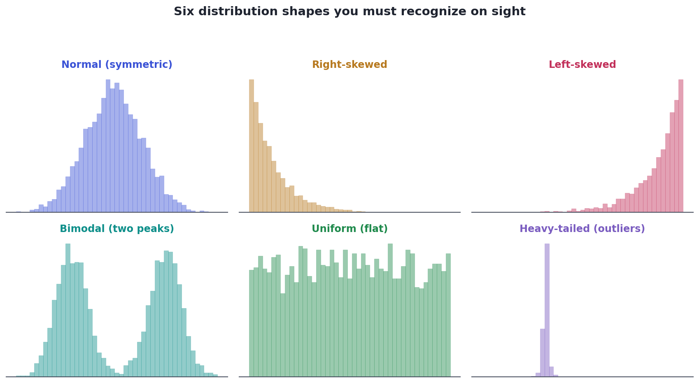
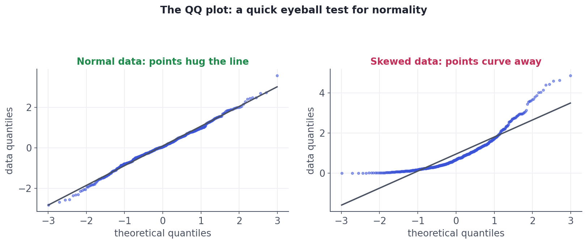
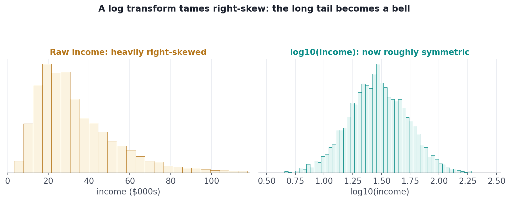

Reading Distributions & Transformations
Recognize distribution shapes on sight, check normality with QQ plots, and tame skew with transforms.
When you plot a single variable, its shape tells a story before you compute anything: where the typical value sits, whether there's a long tail, whether two groups are hiding inside one column. The shape also dictates which statistics and models are even valid — and when a shape is inconvenient, a simple transformation can fix it. Reading distributions is a core EDA skill that pays off in every later track.
ConceptSix shapes to recognize on sight
Most real distributions are a variation on six shapes. Learn to name them from a histogram:
- Normal (symmetric bell): mean ≈ median; the empirical rule applies (Lesson 1.5).
- Right-skewed: a long tail of large values (income, prices, wait times). Mean > median; report the median.
- Left-skewed: a long tail of small values (e.g., exam scores near a ceiling). Mean < median.
- Bimodal (two peaks): a giant clue that two subgroups are mixed together — split and investigate.
- Uniform (flat): every value about equally likely (often IDs or generated data).
- Heavy-tailed: a sharp peak with rare but extreme outliers (returns, failures) — averages can be dangerously unstable.

ConceptChecking normality: the QQ plot
Some methods (certain tests, and the residuals of linear models) assume roughly normal data, so you'll often want to check. A histogram gives a rough sense, but the sharper tool is the QQ plot (quantile–quantile plot): it plots your data's quantiles against the quantiles a perfect normal would have. If the data is normal, the points fall on a straight line; systematic curves away from the line reveal skew or heavy tails.

ConceptTransformations: taming skew
When a variable is heavily right-skewed, a transformation can reshape it into something symmetric — which makes patterns clearer to the eye and assumptions hold for models. The workhorse is the log transform: because it compresses large values far more than small ones, it pulls in a long right tail and often turns it into a bell.

log10(income) is roughly symmetric. Many naturally multiplicative quantities (income, population, prices) live more naturally on a log scale.Two cautions with logs. (1) log(0) is undefined and log of negatives is impossible — for data with zeros use log1p(x) (which computes log(1+x)), and for values that can be negative use a different transform. (2) After transforming, your numbers are in log units; remember to back-transform (exponentiate) before reporting, so stakeholders see real dollars, not log-dollars.
Worked exampleSee a transform fix the skew
We can put numbers on what the picture showed: skewness measures asymmetry (0 = symmetric, positive = right tail). Watch it collapse toward zero, and the mean and median converge, after a log transform.
import numpy as np
from scipy import stats
rng = np.random.default_rng(1)
income = rng.lognormal(mean=10.3, sigma=0.6, size=5000) / 1000 # $000s, right-skewed
print(f"raw income : mean ${income.mean():.0f}k median ${np.median(income):.0f}k "
f"skewness {stats.skew(income):+.2f}")
logged = np.log10(income)
print(f"log10 : mean {logged.mean():.2f} median {np.median(logged):.2f} "
f"skewness {stats.skew(logged):+.2f}")
print("\nThe skew collapsed toward 0 and mean is now ~ median: the data is roughly symmetric.")raw income : mean $35k median $29k skewness +2.68 log10 : mean 1.47 median 1.47 skewness +0.06 The skew collapsed toward 0 and mean is now ~ median: the data is roughly symmetric.
★ Key points to remember
- Name a distribution from its histogram: normal, right-skewed, left-skewed, bimodal, uniform, heavy-tailed.
- Skew → report the median; bimodal → hunt for two hidden subgroups; heavy-tailed → expect unstable means and outliers.
- The QQ plot checks normality: points on the line = normal; curved away = skewed/heavy-tailed.
- A log transform tames right-skew (use
log1pif there are zeros); it suits multiplicative quantities like income and prices. - After transforming, back-transform before reporting so numbers are in real units.
◆ Practice▸
price column with many zeros (free items) and a long right tail. You want to log-transform it for a clearer histogram. What's the catch and the fix?Show solution & reasoning
log(0) is undefined, so a plain np.log(price) will produce -inf/NaN for every free item. The fix is np.log1p(price) (which computes log(1 + price), so zeros map to 0 cleanly), or add a small constant before logging. Remember the result is in log units, so back-transform with expm1 (or exp) before reporting actual prices.
Show solution & reasoning
Many models (and the inference around them) assume things a skewed variable violates: linear regression assumes a roughly linear relationship and normal-ish, equal-variance residuals (Track 4/7). Logging a right-skewed predictor or target can linearize a multiplicative relationship, stabilize the variance, and reduce the leverage of extreme values — making the model fit better and its assumptions hold. (You then interpret coefficients in percentage/multiplicative terms and back-transform predictions.)
◎ Deep dive: power transforms (Box–Cox), eyeballing vs. normality tests, and why skew matters▸
Beyond log: the power-transform family. The log is one of a family of power transforms. Box–Cox automatically finds the best power (square root, log, reciprocal, …) to make positive data as normal as possible; Yeo–Johnson extends it to data with zeros and negatives. scikit-learn's PowerTransformer applies these in a modeling pipeline. The square root is a milder option than log for moderate right-skew (and is natural for count data).
Eyeball first, test second. There are formal normality tests (Shapiro–Wilk, Anderson–Darling), but with large samples they flag even trivial, harmless departures from normality as 'significant' — so a histogram and QQ plot, judged with common sense, are usually more useful than a p-value. Ask 'is it normal enough for what I'm doing?' rather than 'is it exactly normal?' (which real data never is).
Why skew matters downstream. Heavy right skew concentrates influence in a few huge values, which can dominate a mean, inflate a correlation, and give outliers outsized pull on a fitted model (Lesson 3.7 and Track 4). Recognizing and, where appropriate, transforming skewed variables during EDA prevents a cascade of misleading results later — it's cheap insurance taken early.
Be ready for "this feature is very skewed — what would you do?" Answer: confirm with a histogram/QQ plot, report the median for 'typical,' and consider a log (or Box-Cox) transform to symmetrize it for visualization and modeling — mentioning log1p for zeros and back-transforming for interpretation. Recognizing bimodality as hidden subgroups is another strong signal.